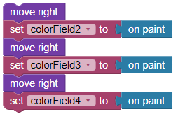
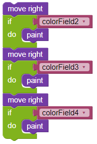
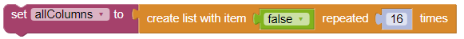
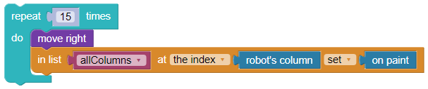
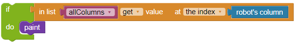

Wie verwende ich Listen?


The robot must paint the marked fields  .
.
Each marked field is below a painted field .
The second row equals the first row but swapped from left to right. The field in row 2 column 2 is marked, if the field in row 1 column 15 is painted; the field in row 2 column 3 is marked, if the field in row 1 column 14 is painted; and so on.
A field in row 4 is marked, if among the other fields in the same column more fields are painted than not .
Hint: The robot cannot move up.Details:
Your program must therefore remember which fields are marked in the first line and then use this memory to determine which fields should be coloured in the second line. A possible procedure is described here:
For example, you can create one variable per cell to store the sensor values:

A truth value (Boolean) is stored in the variables. If the field is coloured, the variable has the value True. If the field is not coloured, the variable has the value False.
You could then read the corresponding variable for each field in the second line to determine whether the field should be coloured.

Instead of storing 15 different variables for each of the 15 fields in front of the robot, the robot should use a list to remember whether the field is coloured or not. A list is a data structure that can contain several elements. The elements are numbered consecutively, starting with 1. We start by creating a list with 16 times the element False, which we assign to a variable:

The values can then be stored as elements in the list by specifying their number and the value you want to store at the position with that number.
Here we want to store the sensor value for each of the 15 fields in front of the robot. Therefore, a sensor that specifies the number of the robot's column on the grid is used as the position number in the list. The on paint returns True if there is colour on the field and False if there is no colour on the field. For each column, we save the information in the list:

As soon as the robot is in the second row, it can read the saved values from the list again. If True has been saved in the list, the field must be painted:

Your program must perform calculations with the column positions.
Note: Your program must be able to handle all test cases.